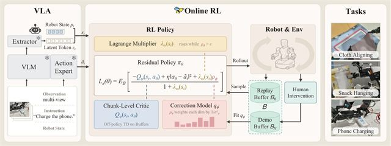

Bee: Intervention-Adaptive Real-World Reinforcement Learning with Vision-Language-Action Models
A residual policy on a frozen VLA. Human corrections set a per-dimension constraint, with tighter bounds where people agree and looser ones where they don't.